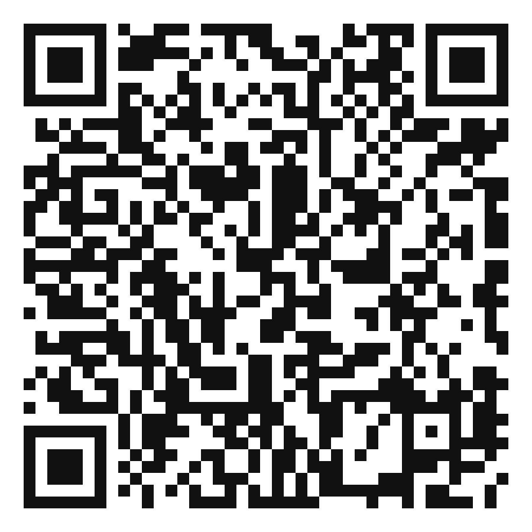

Tres Cielos Mexican Bistro
Aguascalientes, Ags. · Trojes de Oriente

Número propio
449 200 7126
Número de su Facebook oficial (Silos 1006); Restaurant Guru y Foursquare dan el mismo.
Silos 1006, Trojes de Oriente, Aguascalientes
80 platillos · 13 categorías · fuente: Rappi
Ver mensajes
1 · Contacto inicial
Hola, buen día. ¿Es el WhatsApp de Tres Cielos Mexican Bistro? Le escribo de LKM'r, aquí en Aguascalientes; hacemos menús digitales con QR para restaurantes. Le preparé a Tres Cielos Mexican Bistro una muestra de menú digital con su carta, sin costo. ¿Le puedo mandar el enlace para que la vea? Si no le interesa, me dice y no le vuelvo a escribir.
2 · Venta (cuando conteste)
¡Muchas gracias por contestar! Esta es la muestra que le preparé a Tres Cielos Mexican Bistro con su propia carta (sus desayunos, pepitos y pastas): https://lukoffmon.github.io/WebDesignLKM/menus-qr/tres-cielos/ Y este es el código QR que ya le preparé para sus mesas: https://lukoffmon.github.io/WebDesignLKM/menus-qr/tres-cielos/qr/ Son bistró y su carta es amplia (desayunos, pepitos, pastas); en el celular con fotos se ve tan bien como el lugar. El cliente escanea el QR de la mesa, ve fotos y precios, y si quiere manda su pedido directo a su WhatsApp. Lo dejo con su imagen de bistró y un botón para reservar. Los precios de la muestra son los de Rappi; se los dejo con sus precios de salón. El servicio inicia desde $650 de instalación (menú y QR listos para imprimir) y $200 al mes con cambios ilimitados. ¿Le parece si se lo enseño 5 minutos esta semana?